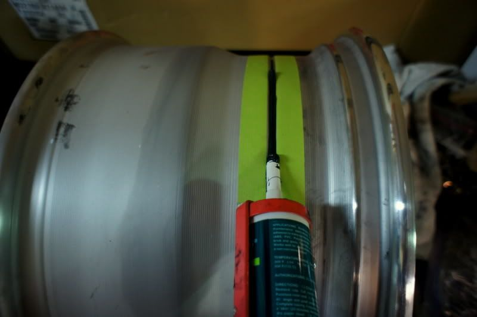

-
First of all I take zero credit for this writeup. It's directly stolen from another forum, written by someone else. I'm just copy pasting it here.
http://forums.pelicanparts.com/porsche- … s-etc.htmlStep 1: Make sure all surfaces are clean and free of any old silicone before mating them together. To strip silicone, you first use a razor blade, then a wire brush attachment on a cordless drill or drill press. There are other methods of stripping old silicone, feel free to get creative.
Step 2: Assemble the wheel. With most three piece wheels, you mate the outer lip and inner barrel together first, then drop the center in from the backside or front side, line up the hardware holes, and put in the hardware by hand.
Step 3: Torque down the hardware (you may also choose to torque down the hardware at the very end, this helps with not having a bubble form in the silicone). With Fikse and Kinesis wheels, which use relatively small, M6 hardware, torque spec is 15 ft lbs (fikse = 14 ft lbs, kinesis = 15 ft lbs). Do not over-torque. With wheels that use larger M8 hardware, torque spec is usually around 18 ft lbs. Torque in a star pattern, rather than just one after another in a row. Do not use a cheap, autozone style torque wrench. Borrow a good torque wrench from a friend if you have to.
Step 4: Lightly scuff up the mating surfaces of the outer lip and inner barrel with scotch-brite or light sandpaper.
Step 5: Clean the mating surfaces with some rubbing alcohol on a rag, or surface prep.
Step 6 (optional): Mask off the mating surfaces so that you'll end up with a clean silicone line on the barrel and the lip.
Step 7: Seal with a non-acid curing, adhesive RTV silicone. Slowly lay down an even bead all the way around, with the angled cut tip of the tube facing down.
*Note: I buy this stuff by the case, so if any of you guys need a tube of it, just email me. thatcher.shultz@gmail.com *

Step 8: Carefully smooth the bead with your finger, applying just the right amount of pressure so that it correctly seals the mating surfaces; you want a smooth, even amount of silicone. Make sure you don't have a bubble in the silicone. Often times, a bubble forms because the trapped air has nowhere to go. One way to combat this problem is to not torque down the hardware until after the wheels are sealed & cured. If a bubble forms, just pop it with a razor blade or something sharp laying around, and smooth back over it with your finger.
Step 9: Remove masking tape before the silicone cures.
Step 10: Allow at least 24 hours of cure time before mounting a tire.


1988 300zxt. gt35, stance, etc. Wheels: Varrstoen ES2 18x9.5 et-13 225/40. 18x10.5 et0 245/40
1990 jetta vr6'd -
i was gonna ask, where the fuck did you get those FIKSE wheels from and why has i never seen them on your car. then i was sad.
nice cross-post.
:amour -
=D. Hopefully i'll be doing that soon as the right sight of barrels pops up at the right time.
Ivg30'd s13 in progress. Shocks. Pegs. Lucky. -
GE Silicone II is the most recommended sealant I have found. Just make sure you buy sealant for aluminum or you can experience leaks.
-
When replacing wheel hardware, is there any special specs needed for the bolts/nuts (hardness, material, etc.)? Will Metric 12.9 suffice?
Also, is it best to assemble with or without loctite/thread locker?
Thanks! -
Usually most wheel hardware is 10.9 or greater. Personally I'd use known wheel hardware over "hardware store" parts.
Always use blue or medium loctite/threadlocker, you don't want to have them come loose due to vibrations.

Copyright © 2006–. All rights reserved. Privacy Policy